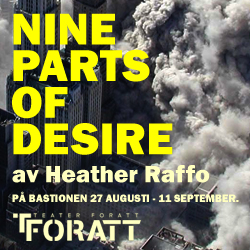
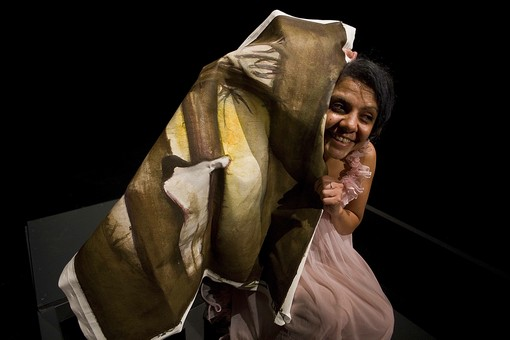
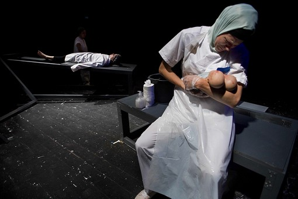
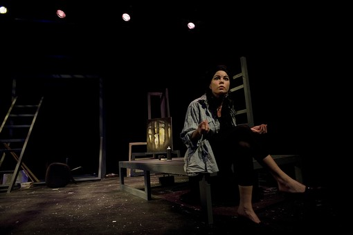

|
|

زنان عراقی، استراتژی بقا و تغییر، در نمایشنامه 9 پرده از تمنا
سه شنبه5 مهر 1390

تغییر برای برابری- شهرزاد امین - روزهای آخر آگوست و هفته های اول سپتامبرسال جاری
شهر مالمو وتئاتر فوراتمیزبان زنانی از عراق،ایران و مصر بود تا تئاتر " 9 پرده از تمنا " هیتر رافو، نمایشنامه نویس آمریکائی-عراقی را که سرنوشت 9 زن عراقی را در سایه جنگ به تحریر در آورده است، به نمایش بگذارند.

زنانی دستفروش، نقاش، پزشک، مبارز سیاسی تبعیدی، شاهد مرگ، عزادار مردگان...در پرده های نمایشنامه ظاهر می شوند و با اجرای مونولوگ هایی از زندگی زنان، از واقعیت زندگی زنان درگیر جنگ و موقعیت جنگی پرده برمی دارند. کارگردان و تولید کننده تئاتر تاکید دارند که اینها نقشهای قربانی کلاسیک نیستند بلکه در درجه اول با گو کننده استراتژی بقاء هستند.
سه هنرپیشه، دنیا مسعود، الونورا د لوقری نوردین و سانا تورسون به سه زبان عربی، انگلیسی و سوئدی نقش بازی می کنند. تماشاچی ها در صندلی های چرخان وسط سالن جای داده میشوند و مونولوگ ها دایره وار اجراء می شوند. هنرپیشه مصری، دنیا مسعود برای اجرای این نمایشنامه از مصر به مالمو سفر کرده است.
نمایشنامه " 9 پرده از تمنا " را هیتررافو پس ازجنگ خلیج و حمله امریکا به عراق نوشت و چندین بار در کشورهای مختلف توسط خود او یا دیگر گروه های تئاتر اجرا شد. این نخستین بار است که این نمایشنامه در سوئد اجرا می شود البته با کمی تغییرات. در ورژن سوئدی با توافق هیتررافو بخش دیگری به نمایشنامه اضافه شده است. نویسنده همراه 9 پرده از تمنا ، پروین اردلان روزنامه نگار مهمان مالمو, سوئد است که در تنظیم این نمایشنامه تئاتر فورات را یاری کرده است. نوشتار پروین عمق و تنوع خاصی به مجموعه تئاتر فورات می بخشد. نوشته او همچون نیرویی مداخله گر، نه در متن نمایشنامه که بر ذهنیت تماشاچیان وارد شده و از بلندگوهای سالن و به زبان های گوناگون عربی، سوئدی و انگلیسی پخش می شود؛ همزمان با پخش صدا، به جای سالن اجرا، محل حضور تماشاچیان روشن می شود و مخاطبان در موقعیت بازیگران هدف قرار می گیرند.
پروین در مصاحبه های گوناگونی که با روزنامه سوئدی سونسکا داگ بلادت، رادیوی سوئد و دیگر نشریات سوئدی داشته اذعان دارد که به دلیل تجربه زیست در دوران جنگ، با فضا و حوادث جاری در نمایشنامه، رشد نظامی گری از یک سو و قدرت گیری جریان های بنیادگرایانه و ایدئولوژیک آشناست، تشابهات زیادی می بیند و اشاره می کند که انسانهایی که جنگ را از نزدیک تجربه کرده اند هم تجارب مشترک و هم تجارب متفاوتی دارند. اما تاکید دارد که حوادث نمایشنامه درگیر محدوده جغرافیایی نیست، می تواند در هرکجای دنیا اتفاق بیفتد و ازاین منظر مرزی ندارد. آنچه بر عراق رفت همچنان بر زندگی مردمان به ویژه زنان آنجا تاثیر گذاشته است. اگر باور کنیم که زندگی زنان عراقی بخشی از زندگی ما هم هست بی تقاوت رد نمی شویم. عراق می تواند تصویری از آینده خیلی از ما باشد. در جهان میلیتاریزه شده دیگر نمی شود کناره نشست. به اعتقاد او مهم نیست درکجا و در کدام مرز قرار گرفته ایم و زندگی می کنیم. و می پرسد: کدامیک از ما از فضا و موقعیت میلیتاریزه شده داخل و خارج مرزهایمان بدور هستیم؟

اما یک قانون همیشه عمل می کند: زنان و کودکان قربانیان آن هستند. پروین در گفتگو با رادیوی سوئد می گوید همیشه درباره زنان به عنوان قربانی حرف می زنیم اما کمتر علاقه مندیم از زبان خودشان، داستان های قربانی شدن و مقاومت هایشان را بشنویم .زنان این نمایشنامه رو به مخاطب با او حرف می زنند. زنان این نمایشنامه برای بقا و تداوم زندگی مبارزه می کنند و تلاش من تداوم این استراتژی در پیوند با استراتژی تغییر به واسطه نیروی جمعی بوده است.
در قسمتهایی از متن نوشته شده پروین در میان منولوگها می شنویم که:
در تونل زمان، خورشید خاورمیانه زودتر طلوع می کند
در تونل زمان اما، زنان خاورمیانه بیشتر از هرزمانی به عقب رانده می شوند.
افغانستان ، عراق ، ایران هرسه شاهد عقب گردهای تاریخی برای زنان هستند
درتاریخ های متفاوت، در مسیرهای گوناگون،
اما آنان در نقاطی با هم تلاقی می کنند: نقطه ایستادگی در برابر عقب گرد
نیروی قدرت مند همصدایی زنان همین نقطه است
در همین نقطه است که صداها همبسته می شوند و همبستگی می خواهند
همبستگی یعنی این
نه طلب عاجرانه کمک از یکدیگر
نه بخشش خیرانه کمک به یکدیگر
همبستگی یعنی احساس مسئولیت و اقدام به عمل

دستیار کارگردان سیندرا میژر جنگ سال 2006 لبنان را تجربه کرد و دنیا مسعود با آپارتمانی در نزدیکی میدان تحریر در قاهره انقلاب مصر را از نزدیک لمس کرده است. تئاتر فورات با پرسپکتیو بین المللی اش و با نمایشنامه 9 پرده از تمنا می خواهد نشان دهد که پایداری فرهنگی یک کشور با زنانش بر می خیزد و بر خاک می افتد. تولید کننده منال مصری می گوید من همیشه به دنبال نوشته هایی از زنان برای زنان هستم.
و ما در لابلای مونولوگها از پروین اردلان می شنویم که:
13 فوریه 1991،پناهگاه امیریه ، بغداد
بمب گذاری عمدی، کشتار 408 نفر ، و تنها یک بازمانده
مادر قدا! تا تو هستی، و شهادت می دهی،
خاطره این کشتار فراموش نمی شود
تا تو هستی و مستند می کنی هیچ دستبردی در تاریخ صورت نمی گیرد
مادران قداها در عراق ،
همچون مادران خاوران و عزادار در ایران،
همچون مادران میدان مایو در آرژانتین،
همچون مادران کشتارها و آدم ربایی هایی بسیار در سراسر دنیا
علیه فراموشی مبارزه می کنند،
حتی اگر ببخشند از یاد نمی برند
آنان حافظه آیندگان را از فراموشی مصون می دارند
آنان یک پیام دارند: مقاومت در برابر فراموشی
منابع: روزنامه های سوئدی سوید سونسکا داگ بلادت , اکسپرسن, رادیوی سوئد